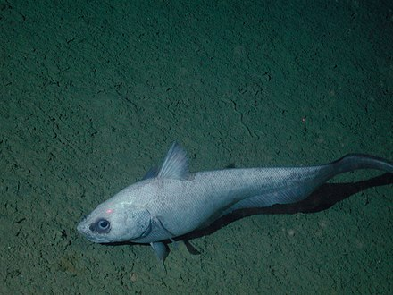
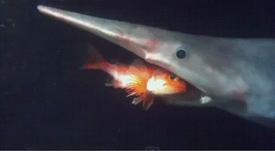

DIET AND FEEDING
DIET
The goblin shark feeds mainly on teleost fishes such as rattails and dragonfishes. It also consumes cephalopods and crustaceans, including decapods and isopods. Garbage has been recorded from the stomachs of some specimens. Its known prey includes bottom-dwelling species such as the blackbelly rosefish (Helicolenus dactylopterus), and midwater species such as the squid Teuthowenia pellucida and the ostracod Macrocypridina castanea rotunda. Thus, the goblin shark appears to forage for food both near the sea floor and far above it.
FEEDING
Since it is not a fast swimmer, the goblin shark may be an ambush predator. Its low-density flesh and large oily liver make it neutrally buoyant, allowing it to drift towards its prey with minimal motions so as to avoid detection. Once prey comes into range, the shark's specialized jaws can snap forward to capture it. The protrusion of the jaw is assisted by two pairs of elastic ligaments associated with the mandibular joint, which are pulled taut when the jaws are in their normal retracted position; when the shark bites, the ligaments release their tension and essentially "catapult" the jaws forward. At the same time, the well-developed basihyal (analogous to a tongue) on the floor of the mouth drops, expanding the oral cavity and sucking in water and prey.
{kind=link}
Striking and prey capture events were videotaped and recorded for the first time during 2008 and 2011 and helped to confirm the use and systematics of the protrusible jaws of goblin sharks. The video evidence suggests that while the jaws are definitely unique, goblin sharks use ram feeding, a type of prey capture that is typical of many mackerel sharks. What makes the goblin shark unique is the kinematics of their jaw when feeding. The lower jaw seems to undergo more complex movements and is important in capturing the prey. The measured protrusions of the upper and lower jaw combined put the goblin shark jaws at 2.1–9.5 times more protrusible than other sharks. The lower jaw has a velocity about two times greater than the upper jaw because it not only protrudes forward, but also swings upward to capture the prey, and the maximum velocity of the jaws is 3.14 m/s. The goblin shark has a re-opening and re-closing pattern during the strike, a behavior that has never been seen in other sharks before and could be related to the extent with which the goblin shark protrudes its jaws. This “slingshot” style of feeding could be an adaptation to compensate for poor swimming ability by allowing the goblin shark to catch elusive, fast prey without having to chase the prey.